개시 반응
QR로 들어와 제 소개와 오늘의 주제를 확인하고, 퀴즈와 짧은 설문으로 시작해보겠습니다!
오늘 연수 페이지 링크
특징: 제가 화면을 전환하면, 선생님들의 화면도 자동으로 전환됩니다!
휴대폰이나 노트북으로 QR을 찍어 들어와주시길 바랍니다~! 들어오시면 제가 장면을 넘길 때마다 선생님 화면도 같은 장면으로 넘어갑니다. 혼자 앞뒤를 보고 싶으실 때는 위쪽의 「따라가기」를 눌러 끄실 수 있습니다.
중간중간 선생님들께 여쭤보는 칸이 있습니다. 적어 주신 글은 앞 화면과 다른 선생님 화면에 바로 뜨고, 이름은 비워 두셔도 됩니다.
학생들이 바라본 저
제 소개는 제가 하기보다, 학기 끝에 학생들이 써 준 편지로 대신하겠습니다. 낱말을 눌러 보세요.
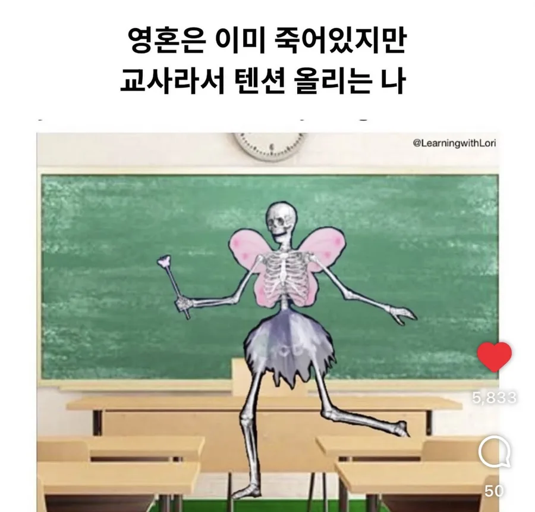
독서교육을 위한 도구, 바이브코딩으로 만들기
오늘 이야기의 중심입니다. 독서교육 방법은 선생님들께서 저보다 잘 아시니, 저는 독서교육에 필요한 도구를 이렇게 만들 수 있다는 것을 보여 드리겠습니다.
바이브코딩은 코드를 직접 짜지 않고, 만들고 싶은 것을 말로 설명해서 AI가 코드를 쓰게 하는 방법입니다. 영상처럼 한 문단 부탁하고 사진 한 장을 보여 주면 몇 분 안에 돌아가는 화면이 나옵니다.
독서와 AI라는 주제에서 철학적인 이야기나 독서교육의 방향은 오늘 함께 나누는 이야기로 두려고 합니다. 독서교육의 방법은 선생님들께서 저보다 훨씬 잘 아십니다. 그래서 오늘은 독서교육에 필요한 도구를 이런 식으로 만들 수 있다는 것을 보여 드리고, 어떤 도구가 필요한지 떠올리기 위해 여러 고민에 함께 답해 보는 시간으로 준비했습니다.
따라 해 보실 수 있는 실습 링크와 페이지
도구를 만드는 실습은 오늘 연수 시간 안에 하기 어려워서 다른 이야기들을 가져왔습니다. 대신 연수 뒤에 따라 해 보실 수 있는 자료를 모두 모아 드립니다. 반짝이는 칸은 오늘 오신 선생님들께 특히 쓸모 있을 것 같은 자료이고, 「무엇을 하는 페이지인가요?」를 누르면 자세한 설명이 열립니다.
무엇을 하는 페이지인가요?
연수 허브는 바이브코딩이 무엇이고 무엇을 할 수 있는지 짚고, 제가 만든 것들을 둘러본 뒤 모듈(기초·학생 데이터·디자인·칠판 강의)로 나뉘어 직접 만들어 보는 시작 페이지입니다.
① 기초는 수업하면서 「이런 게 있으면 좋겠다」 싶던 도구 하나를 말로 만들어 보관함에 올리는 데까지 따라 하는 매뉴얼입니다. 도구 열기 → 프롬프트 쓰기 → 만들기 → 30초 점검 → 고치기 → 올리기 순서이고, 쓰시는 AI(ChatGPT·Claude·Gemini·SenGPT)를 고르면 그에 맞는 설명만 보입니다. 무료 계정으로도 됩니다.
개별 실습은 다음 주 수업 한 차시를 정해, 칠판 내용을 움직이게 하는 HTML이나 실험 안내 HTML, 또는 문제지·손글씨 단권화·실험 매뉴얼 PDF를 만들어 보는 실습 페이지입니다. 제작 지침과 디자인 파일을 내려받아 AI에게 붙이고 프롬프트 칸만 채워 보내면 됩니다.
디자인 서랍(DESIGN.md 74벌과 한글 서랍)
무엇을 하는 페이지인가요?
DESIGN.md는 한 웹사이트의 색, 글꼴 크기, 간격, 단추 모양, 해야 할 것과 하지 말 것을 글로 적어 둔 설계서 파일입니다. 서랍에서 마음에 드는 한 장을 골라 만들어 둔 도구와 함께 AI에게 주고 「디자인만 바꿔 줘」라고 하면, 기능은 그대로 두고 옷만 갈아입힙니다.
잘 알려진 서비스 디자인 74벌, 학교에서 쓰기 좋게 따로 만든 한글 서랍, 제가 실제로 써 본 예시를 함께 볼 수 있습니다. 쓰시는 AI를 고르면 그 AI에서 설계서를 넣는 방법만 보입니다.
학습지형 · 기본형 · 시뮬 링크형 · 3D형 · 틀 · 규격서
무엇을 하는 페이지인가요?
학생이 혼자 여는 수업용 웹 페이지(표지 + 학습 5단계 탭)를 만드는 스킬 네 가지입니다.
학습지형은 개념정리 학습지의 빈칸·번호·순서를 그대로 옮기고, 기본형은 교과서 쪽이나 수업 메모만으로 만듭니다. 시뮬 링크형은 PhET처럼 이미 있는 시뮬레이션 링크를 탐구 활동에 넣어 AI가 쓰는 양이 적고, 3D형은 three.js로 돌려 볼 수 있는 실험판을 직접 넣는 고급 방식입니다.
틀은 네 스킬이 함께 쓰는 빈 페이지 파일이고, 규격서는 AI가 지킬 규칙입니다. AI는 내용 파일 하나만 쓰고, 디자인은 색 파일 값만 바꾸게 되어 있어 매번 비슷한 품질이 나옵니다.
무엇을 하는 페이지인가요?
전자칠판이나 TV에 띄워 방향키로 한 단계씩 넘기며 설명하는 강의 화면(HTML 파일 하나)입니다. 개념정리 학습지의 빈칸과 같은 번호로 빈칸이 열리고, 레이저와 빨간 펜, 학생 복습용 화면이 들어 있습니다.
만드는 법에서는 학습지 한 장을 넣어 빈칸과 맞춘 화면을 만드는 길과, 학습지 없이 수업을 말로 설명해서 간단히 만드는 길 가운데 하나를 골라 따라 합니다. 완성한 화면 모음에는 제가 실제 수업에 쓰는 칠판 강의 18편과 손글씨 노트 13편이 있습니다.
설계서 · 예시 전기와 자기 · 별과 우주 · 손글씨 노트 강의 · PDF 제작 자료
무엇을 하는 페이지인가요?
한 단원을 A4 여섯 쪽(본문 다섯 쪽 + 맨 끝 「찐막 정리」 한 쪽) 손글씨 노트로 정리하는 방법입니다. 손글씨 글꼴, 두 단 짜임, 소제목마다 형광펜 밑줄이 들어갑니다. 설계서와 단원 내용(교과서 쪽이나 수업 노트)을 AI에게 함께 주면 같은 모양의 단권화가 나옵니다.
그림은 이미지 생성이 아니라 도형과 기호로 직접 그려서, 개수나 화살표 방향이 틀어지지 않고 틀린 곳은 한 줄만 고치면 됩니다. 예시 두 편은 제가 수업에 쓴 단권화이고, 손글씨 노트 강의는 같은 내용을 모눈종이에 한 줄씩 써지는 화면으로 만든 것입니다. PDF 제작 자료에는 실제로 쓴 제작 지침(SKILL.md)과 검수표가 묶여 있습니다.
무엇을 하는 페이지인가요?
만들어 둔 앱에 Supabase를 붙여 학생 제출을 한곳에 모으고, 선생님 화면에서 모아 보고, AI를 키가 드러나지 않게 연결하는 방법을 따라 하는 매뉴얼입니다. 「실험 결과 제출함」 앱 하나를 만들며 배우고, 학생에게 내놓기 전에 꼭 확인할 다섯 가지를 정리해 두었습니다. 만들어 둔 앱 하나와 GitHub 계정이 있으면 됩니다.
무엇을 하는 페이지인가요?
읽기 노트는 학생이 읽기 전에 질문을 적고, 부분마다 내 말로 요약하고 질문을 남기고, 다 읽은 뒤 처음 질문에 답하는 도구입니다. 선생님은 반 학생들의 요약과 질문을 한 화면에 모아 보고 어디서 많이 막혔는지 봅니다. 체험 화면은 꾸민 예시 기록으로 열립니다.
독서 도구 실험실에는 책 고르기, 질문 사다리, 문단 지도, 사실·의견 가르기, 개념 렌즈 노트, 줄이고 또 줄이기, 두 글 견주기, 저자 인터뷰 준비, 장르별 질문 카드 같은 작은 도구 열 개가 있습니다. 서버 없이 그 기기에만 저장되고, 학생이 생각을 쓰는 칸은 붙여넣기를 막아 두었습니다.
무엇을 하는 페이지인가요?
연수 페이지 설계서는 이 페이지처럼 연수 자료를 HTML 한 장으로 만드는 규칙입니다. 상세·발표 두 모드, 단계 칩, 블록 짜임을 그대로 적어 두어 연수 내용만 알려 주면 같은 틀이 나옵니다.
개념 설명 화면은 판서 수업 중에 눈으로 봐야 이해되는 개념 하나를 6~12장면으로 보여 주는 화면이고, 실험 안내 화면은 실험 전에 안전 수칙 → 준비물 → 과정 → 정리 순서로 넘기며 설명하는 화면입니다. 실험 안내 화면은 약품 이름·농도·양을 선생님이 적어 주신 값만 쓰고, 마지막에 안전 확인 문제와 인쇄용 점검표가 나옵니다.
설계서와 스킬은 AI에게 함께 주고 내용만 알려 주면 같은 틀의 결과물이 나오도록 쓴 파일입니다. 이 연수 페이지도 「연수 페이지」 설계서와 같은 규칙으로 만들었고, 손글씨 단권화와 칠판 강의 화면도 각각의 설계서로 만들었습니다.
오프닝 퀴즈: AI로 뭐든 바로 해결한다는 뜻의 신조어는?
가장 먼저 맞히신 선생님께 커피 쿠폰을 드립니다!
정답은 「딸깍」입니다
그런데 딸깍은 결과물만 남기고, 그 과정은 쉽게 휘발되거나 애초에 저장되지 않습니다.
결과물은 바로 남지만, 생각한 과정은 남지 않습니다.
글과 씨름한 과정이 읽는 사람 머릿속에 쌓입니다.
이런 '대딸깍' 시대에 학생들에게 진짜 배움이 일어나도록 하는 곳이 저는 독서라고 생각합니다.
AI를 못 쓰게 할 수도 없고, 과제를 내면 다 AI로 해 오고
AI 시대 선생님들의 고민을 담은 영상입니다. 영상을 보시고, 독서교육에 AI를 활용하는 것을 어떻게 보시는지 여쭙겠습니다.
1점(부정)부터 5점(긍정) 가운데 고르고, 그 이유를 간단히 써 주세요. 공감을 가장 많이 받으신 선생님께 커피 쿠폰을 드립니다!
제 수업으로 드리는 인사
교사가 자기를 소개하는 가장 빠른 방법은 자기 수업을 소개하는 것이라고 들어서, 제 과학 시간을 먼저 보여 드리겠습니다!
제 과학 시간을 한 줄로 말하면, 질문하는 과학 수업입니다
그런데 「질문 있는 사람?」 하고 물으면 교실이 한순간에 조용해집니다.
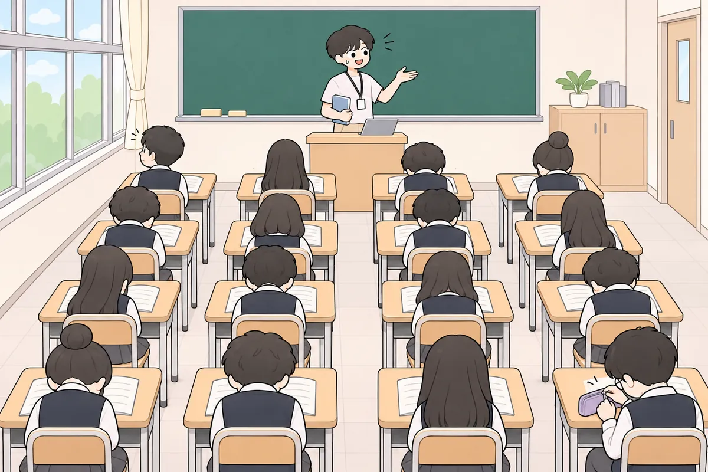
저는 화학을 전공했고, 지금은 중학교 2학년에게 별과 우주를 가르치고 있습니다.
사실 교실을 한순간에 조용하게 만드는 방법이 있습니다. 「질문 있는 사람?」 하고 물으면 됩니다. AI 시대에는 질문하면서 배우는데, 정작 우리 학생들은 질문을 잘 꺼내지 않습니다.
학생이 질문할 수밖에 없게 하려고 정한 세 가지
질문할 수밖에 없는 인지적 경험이나 몸으로 겪는 경험을 먼저 줍니다.
눌러서 보기질문을 심으면 내 나무가 자라고 열매와 레벨이 쌓입니다. 질문하는 일이 게임처럼 즐겁게 느껴지도록 만들었습니다.
눌러서 보기현상을 보거나 배우다가 나도 모르게 질문이 나올 정도까지 가 보는 것이 이번 학기 목표입니다.
눌러서 보기학생에게 질문하라고 말하기 전에, 질문이 나올 수밖에 없는 경험을 먼저 주려고 합니다. 그래서 궁금증이 생기도록 사진과 영상으로 질문유발자료를 직접 만듭니다.
질문을 올리는 곳은 제가 만든 질문과수원입니다. 질문을 심을수록 나무가 자라고 열매가 열려서, 학생들이 질문 개수보다 자기 나무를 키우는 재미로 질문을 올립니다. 칸을 누르시면 관련 장면과 화면을 보실 수 있습니다.
질문이 나올 경험부터
공을 가장 많이 들이는 곳은 수업 도입입니다. 실험이나 현상을 보고 나온 질문들입니다.
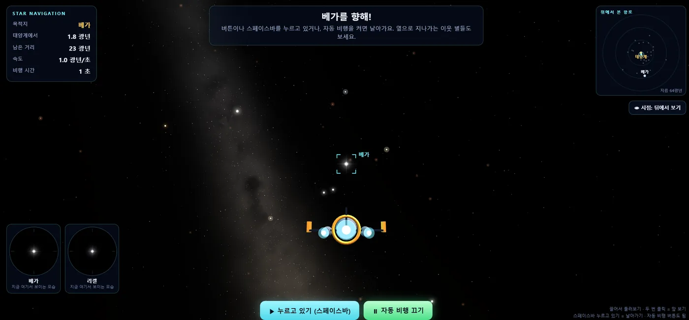
- 왜 나침반이 움직였나요
- 스타이로폼 접시에 털가죽을 10초 문지른 것과 1분 문지른 것 중에 어떤 전구가 더 많이 켜질까
- 뜨거운 물에 풍선이 부풀어 오를 때 페트병 여러 개를 뜨거운 물에 넣어 그 위에 에어바운스를 놓으면 에어바운스를 할 수 있나요?
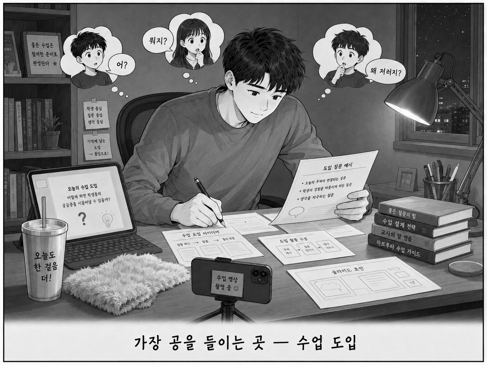
학생 질문은 반과 이름을 지우고 옮겼습니다.
질문과수원(게이미피케이션 요소 도입)
질문을 심으면 내 나무가 자라고, 열매와 레벨이 쌓입니다. 질문하는 일이 게임처럼 즐겁게 느껴지도록 만들었습니다.
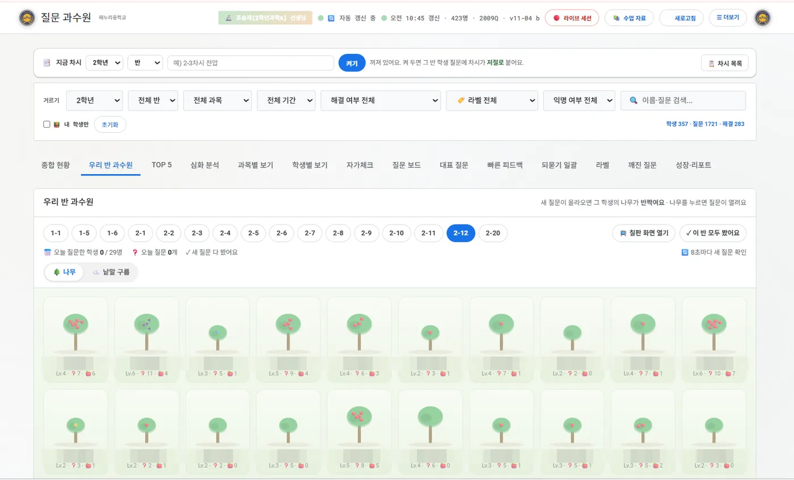
- 질문 하나를 심으면 열매 하나가 열리고, 질문할수록 내 나무가 자랍니다.
- 친구들이 물을 주고, 제가 되묻기를 달아 질문을 다듬게 합니다.
- 「우리 반 숲」에서 반 전체의 나무를 함께 봅니다.
- 매달 「~했상」 시상으로 이야기가 있는 질문을 칭찬합니다.
질문한 과정을 기록
질문과수원에서는 질문 하나가 열매 하나가 되고, 다듬기·예상·알아볼 방법·찾기·정리·넓히기 칸에 탐구 과정을 남깁니다.
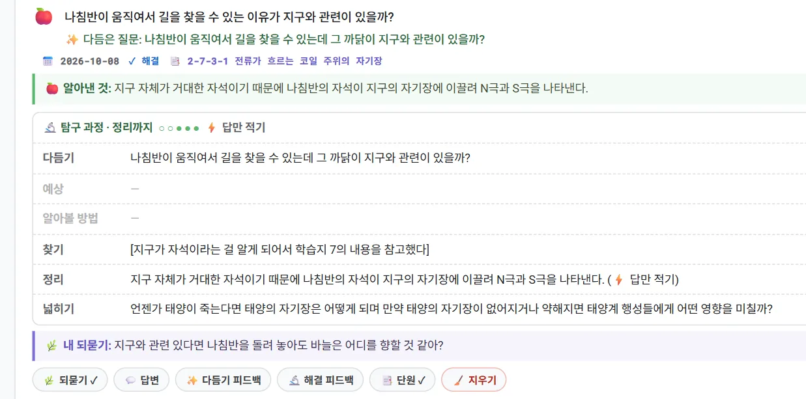
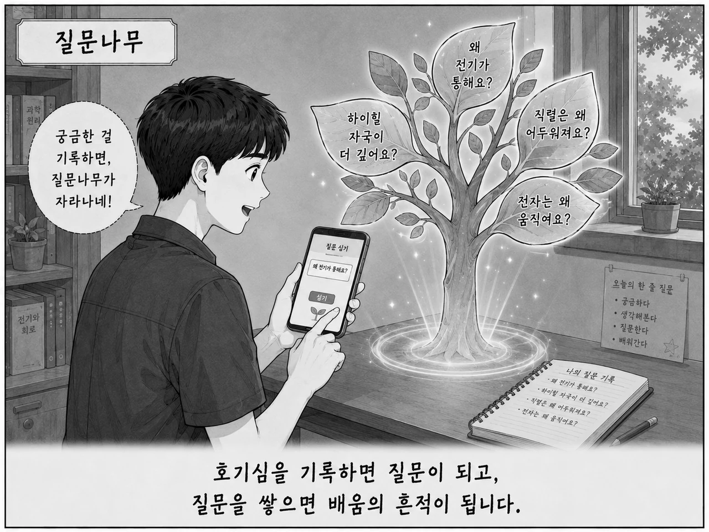
가벼운 목표: 질문의 활성화 에너지 낮추기
화학에서 활성화 에너지는 반응이 일어나려면 넘어야 하는 언덕입니다. 질문에도 그런 언덕이 있습니다.
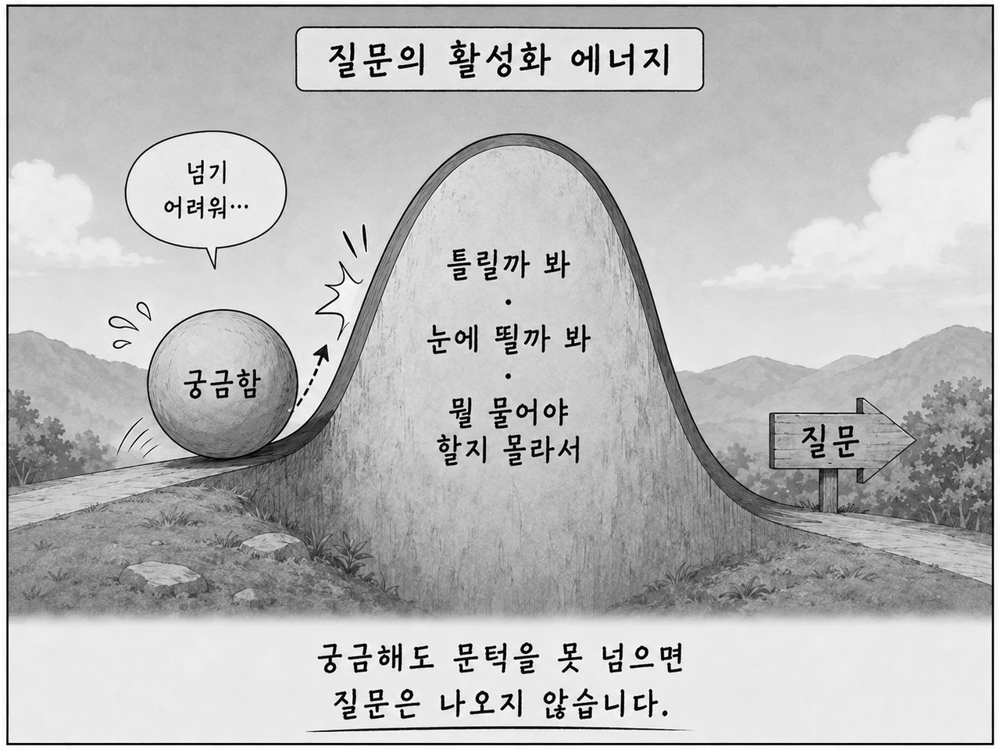
틀릴까 봐, 눈에 띌까 봐, 뭘 물어야 할지 몰라서 궁금해도 문턱을 못 넘으면 질문은 나오지 않습니다. 그래서 이번 학기 목표를 질문하는 데 드는 에너지를 낮추는 것으로 잡았습니다.
다음 단계로 가는 질문
수업을 듣고 한 걸음 더 나간 질문들입니다.
- 새로운 밝은 별이 발견될 때마다 계속 음수 등급을 만들기보다 그냥 새로운 등급 체계를 만드는 것이 낫지 않을까?
- 전동기를 돌게 하도록 하기 위해서 전류를 흘려줄 때 전류의 방향이 바뀔 때 속도가 감소하면서 전기적인 효율이 감소되는 건가요?
- 만약 전동기나 스피커가 자기장을 받지 않는다면 자기장 말고 어떤 힘으로 움직일 수 있을까?
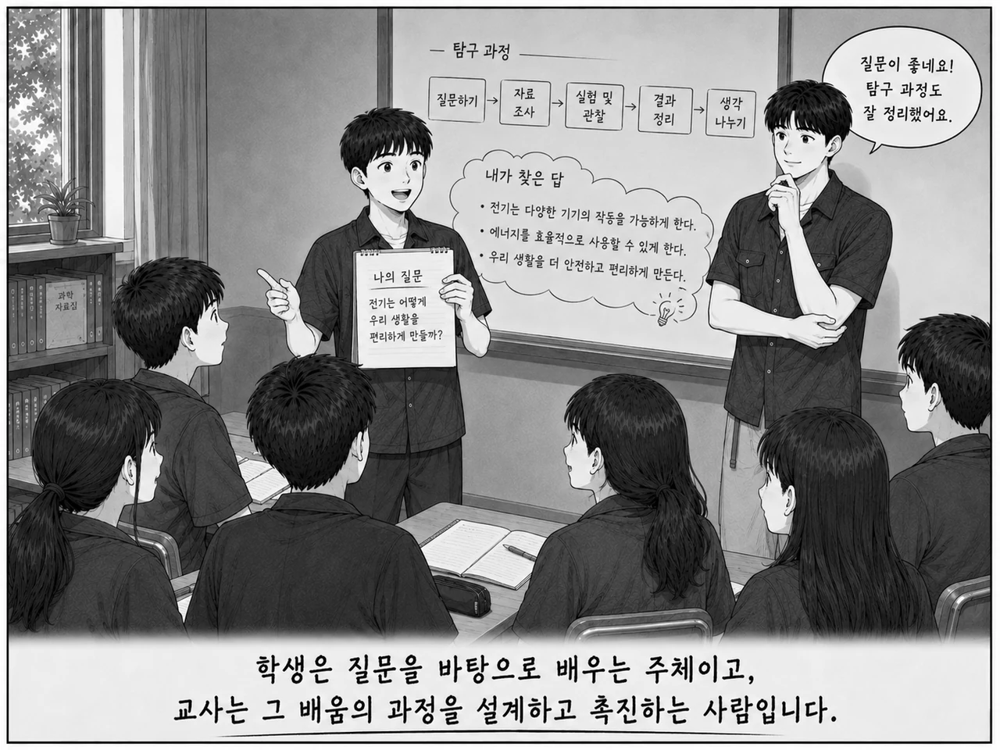
학생 질문은 반과 이름을 지우고 옮겼습니다.
제가 질문 수업을 하는 이유
질문이라는 거울로 학생들을 바라보기 위해서입니다. 오리엔테이션 때 학생들에게 「질문은 창이 아니라 거울」이라고 말했습니다.
바깥을 봅니다.
나를 봅니다. 어떤 질문을 하는지가 내가 어떤 사람인지, 얼마나 이해했는지를 보여 줍니다.
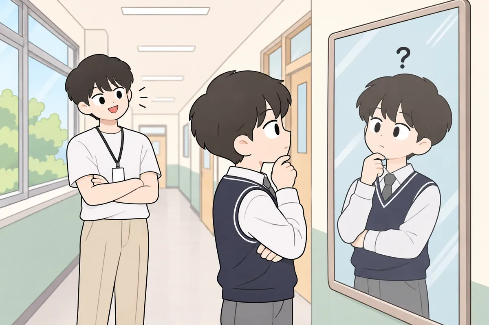
창은 바깥을 보는 것이고, 거울은 자기 자신을 보는 것입니다. 그래서 너희가 어떤 질문을 하는지가 너희가 어떤 사람인지, 얼마나 이해했는지를 말해 준다고 이야기했습니다.
질문하는 수업을 하기 위해 만든 플랫폼 소개: 질문과수원
학생이 질문을 심고, 다듬고, 스스로 답을 찾아 적는 웹앱입니다. 2학년 질문이 1,700개 넘게 모였습니다.
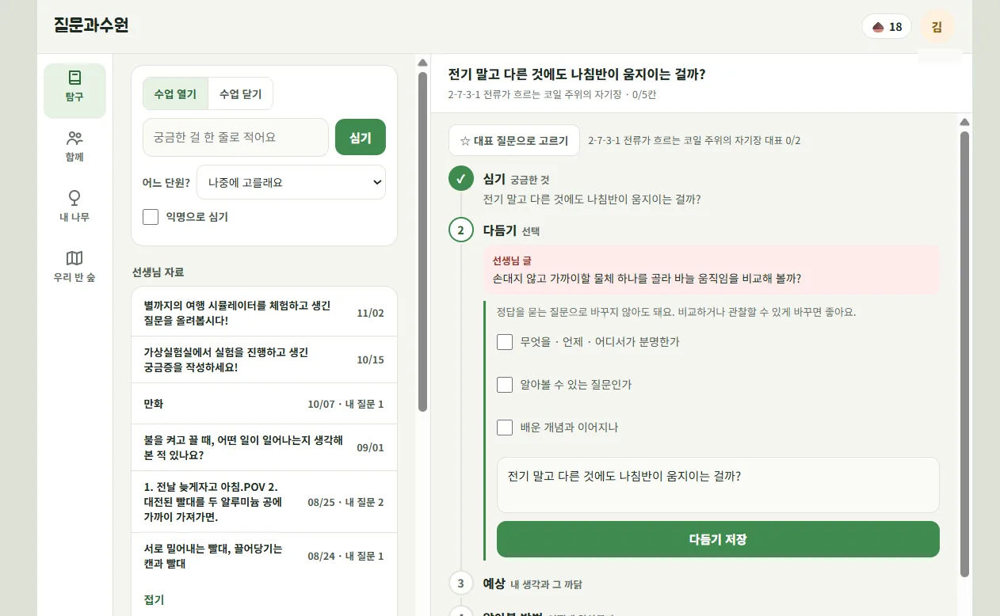
질문과수원은 제가 만든 웹앱입니다. 학생이 질문을 올리면 친구들이 물을 주고, 제가 되묻기를 달고, 학생은 답을 찾아 적습니다. 11월 초에 세어 보니 2학년 학생들이 올린 질문이 1,700개를 넘었습니다.
가장 중요하게 여기는 것은 질문하기 편한 교실입니다
질문이 올라오면 그 학생의 나무가 반짝이고, 저는 그걸 눌러 보며 정말 호들갑을 떱니다.
눌러서 보기엉뚱한 질문에도 피드백을 달고, 질문한 것을 많이 칭찬합니다.
눌러서 보기교실을 즐겁게 했상, 끝까지 팠상, 예상이 빗나갔상, 실생활로 확장했상, 콩글리쉬상을 줍니다.
눌러서 보기상은 질문 개수로 주지 않습니다. 끝까지 파고든 학생, 예상이 빗나간 것을 기록한 학생, 배운 것을 생활과 이은 학생처럼 이야기가 있는 학생에게 주려고 이름을 그렇게 지었습니다. 콩글리쉬상은 자판이 영어로 바뀌어 있어도 포기하지 않고 로마자로 질문을 올린 학생에게 주는 상입니다.
올라온 질문에 바로 반응합니다(호들갑)
엉뚱한 질문도 진지하게
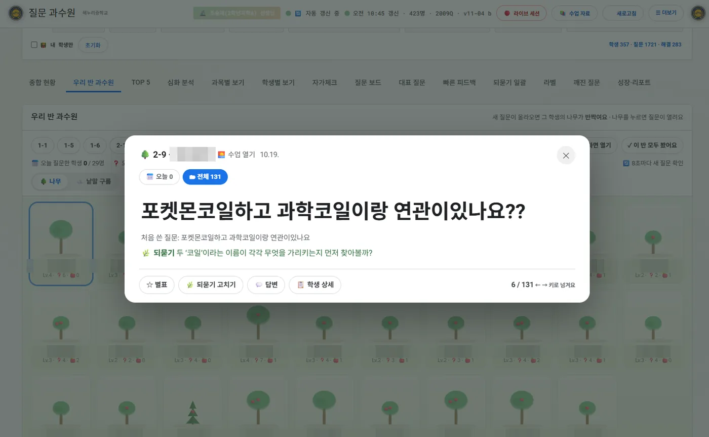
- 코일 없이 세탁기를 만들 수 있을까?
- 히포라테스는 어떻게 별을 보고 6등급으로 나누었을까(주관적인 요소로 나누었을까)
- 베텔기우스 이름은 누가 지었을까
- 별은 왜 존재하는 걸까?
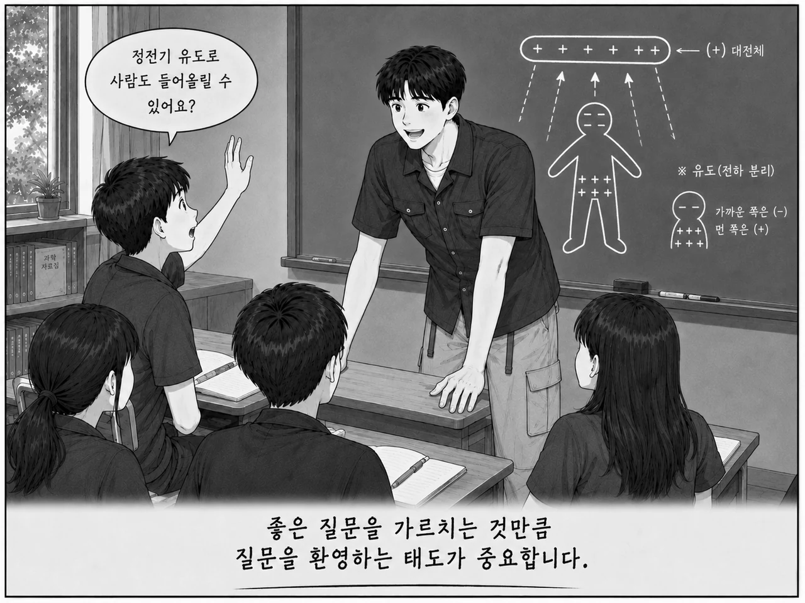
학생 질문은 반과 이름을 지우고 옮겼습니다.
이번 달부터 이달의 상
이번 달 말에 처음 여는 「해누리 질문 어워즈」 화면입니다.
질문하는 수업에서 학생의 성장
질문이 쌓이면서 학생들에게 생긴 변화입니다. 칸을 누르시면 실제 기록과 학생 글을 보실 수 있습니다.
질문이 어떻게 다듬어지고 풀렸는지, 다듬기부터 넓히기까지 칸에 남깁니다.
눌러서 보기호기심을 끄는 질문에서 멈추지 않고, 수업을 집중해 들은 뒤 그다음으로 나아가는 질문을 스스로 던집니다.
눌러서 보기배운 것을 집과 학교, 뉴스에서 본 장면과 잇고, 다른 단원과 다른 장면으로 옮겨 봅니다.
눌러서 보기호기심을 끄는 질문도 좋지만, 저는 수업을 집중해서 들은 다음에야 나올 수 있는 질문을 학생이 스스로 던져 보기를 바랐습니다.
실생활로 확장하고 옮겨 가기
학기 끝에 학생들에게 받은 편지에서 옮긴 문장입니다.
- 힘 단원을 배우고 나서는 세상 모든 물체들에게 화살표가 그려지더라구요. 너무 지나친 것 같지만 실제로 그랬습니다… 장력도 배워보고 싶어요.
- 제가 선생님께 수업을 받으면서 얻은 과학 지식을 가지고 오빠랑 과학에 대해서 토론도 하고, 서로 이게 맞다고 싸우기도 했었어요. 그만큼 과학이 너무 좋아진 것 같아요.
이달의 상에도 배운 것을 생활과 이은 학생에게 주는 「실생활로 확장했상」을 두었습니다.
독서교육 워크숍에서 질문에 대한 이야기를 나눈 이유
책은 세상을 보는 창, 읽은 뒤에 던지는 질문은 거울이기 때문입니다! 창밖으로 나가기 전에 거울 앞에서 나를 점검하는 일, 저는 그것이 질문하며 읽기라고 생각합니다.
독서는 다른 사람의 머릿속에 들어가 세상을 보는 창입니다. 하지만 책이 곧 세상은 아닙니다.
김범준 교수(성균관대 물리학과)의 말창으로 본 것을 두고 질문을 던지면, 내가 무엇을 알고 무엇을 모르는지가 비칩니다.
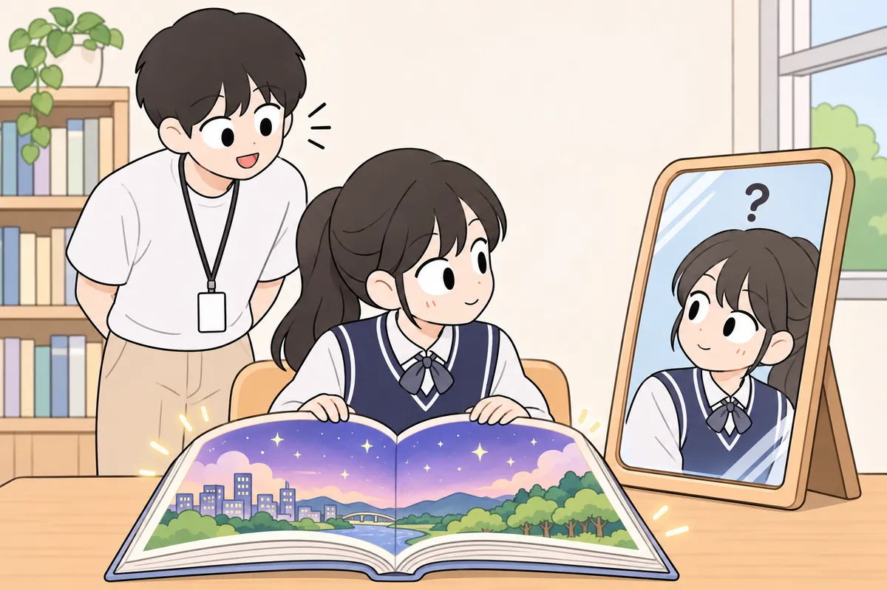
김범준 교수님은 독서가 타인의 머릿속에 들어가 세상을 보는 창이지만, 책이 곧 세상은 아니라는 점을 늘 유의해야 한다고 강조합니다. 저는 여기에 하나를 덧붙이고 싶습니다. 창으로 세상을 본 다음에 던지는 질문은 거울입니다. 창밖으로 나가기 전에 거울 앞에서 나를 한 번 점검하는 것, 그것이 질문하며 읽기라고 생각합니다. 오리엔테이션 때 학생들에게 「질문은 창이 아니라 거울」이라고 말한 것도 같은 뜻이었습니다.
다음 학기에는 읽기 자료를 많이 찾고 만들어서 학생들에게 주고, 학생들이 그 자료를 읽으면서 질문하고, 그 질문으로 배우는 수업을 하려고 합니다.
서울시교육청이 2025년 12월에 발표한 독서교육 계획에서 개념탐독 수업은 관계맺기, 탐색하기, 적용하기, 전이하기의 네 단계로 소개되었고, 첫 단계인 관계맺기에 개념적 질문 만들기가 들어 있었습니다. 제가 과학 시간에 해 온 일이 그 첫 단계와 같은 자리에 있다고 생각합니다.
독서와 AI 연계라는 주제에 대한 고민이 많았습니다
이 연수를 어떤 방향으로 준비했는지 말씀드리겠습니다!
요약만 읽으면, 글과 씨름하며 생각하는 과정이 사라집니다
AI 없이 읽고, 자기 힘으로 정리하는 경험이 왜 필요한지 다룬 영상입니다.
학생이 하는 독서만큼은 AI가 발 디딜 곳이 없어야 한다고 생각했습니다
그래서 선생님께서 독서교육을 위한 플랫폼을 직접 만드시는 것을 이 연수의 방향으로 잡았습니다.
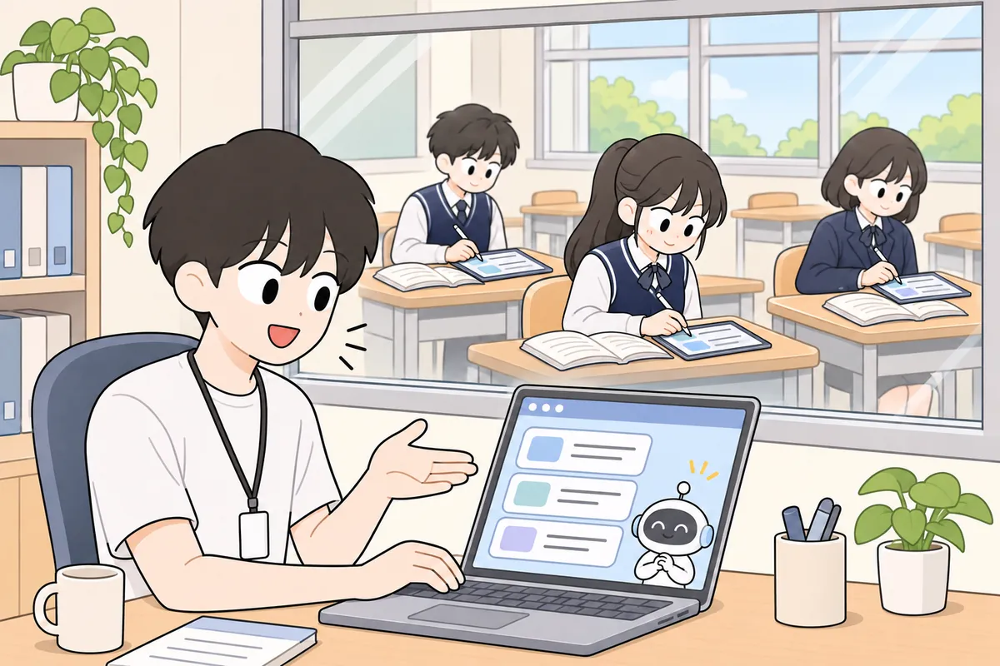
독서와 AI 연계라는 주제를 받고 고민이 많았습니다. 학생이 하는 독서만큼은 AI가 발 디딜 곳이 없어야 한다고 생각했기 때문입니다. 그래서 학생에게 AI를 쥐여 주는 이야기보다, 선생님께서 AI로 독서교육 플랫폼을 직접 만드시는 이야기를 이 연수의 방향으로 잡았습니다. 뒤에서 제가 AI로 만든 독서 도구와 만드는 순서를 보여 드리는 것도 그래서입니다.
독서교육에서 AI를 쓰는 사람과 그 목적
목적은 독서교육 플랫폼 개발입니다. 우리 반 학생에게 맞는 독서 도구를 AI와 대화하며 만듭니다.
AI로 읽기를 하려는 것이 아니라, AI를 올바르게 쓰는 방법을 배우려는 것입니다.
독서교육에서 AI를 쓰는 사람은 선생님이고, 목적은 독서교육 플랫폼을 만드는 것입니다. 학생도 언젠가는 AI를 쓰게 되는데, 그때 학생이 배울 것은 AI를 올바르게 쓰는 방법이라고 생각합니다.
제 교실에서 쓰는 도구들
눌러서 선생님 화면에서 직접 열어 보실 수 있습니다.
도구 이름 · 한 줄 설명 · 링크
도구 이름 · 한 줄 설명 · 링크
도구 이름 · 한 줄 설명 · 링크
오늘 이야기의 끝은 선생님 교실에 맞는 독서 도구를 선생님이 직접 만들어 가시는 것입니다. 그래서 제가 만든 것들을 먼저 보여 드립니다. 모두 수업하다 불편했던 장면 하나에서 시작했고, AI와 대화하면서 만들었습니다.
학습에서 AI - feat. 공문 읽기, 교과서 읽기
공문을 읽을 때와 교과서를 읽을 때 AI가 어떻게 달랐는지, 그래서 공부 순서를 어떻게 바꿨는지 짧게 말씀드리겠습니다!
공문은 처리하려고 읽고, 공부는 달라지려고 읽습니다
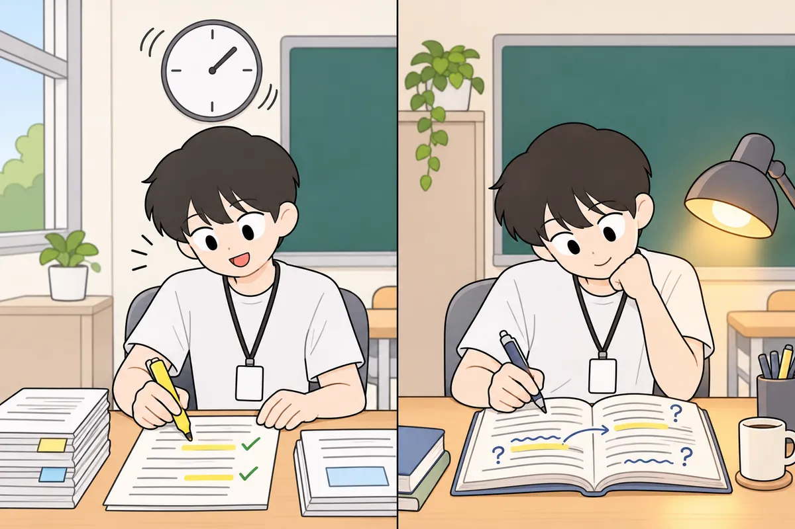
긴 공문은 NotebookLM에 넣어 제 할 일부터 정리합니다. 이미 아는 업무라 정리가 이상하면 바로 알아챕니다.
전공이 아닌 우주를 「요약해줘」로 5시간씩 공부했는데, 학생 질문 하나에 말문이 막혔습니다. 요약을 읽고 안다고 착각한 것입니다.
업무에서는 든든하던 AI가 공부에서는 남는 게 없었던 까닭을 따져 보니 읽는 목적이 달랐습니다. 공문은 읽고 나서 할 일을 처리하면 되지만, 공부는 읽고 나서 제 머릿속이 바뀌어야 합니다. 요약을 읽고 다 안 것 같았던 제 착각을 심리학에서는 설명 깊이의 착각이라고 부릅니다.
그래서 바꾼 공부 순서
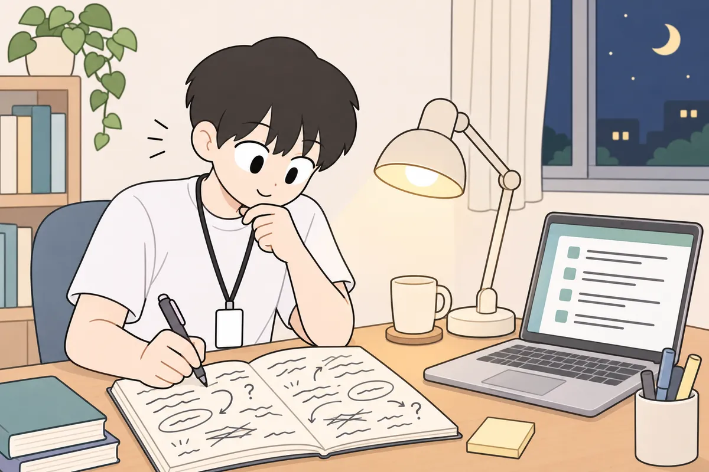
지금은 읽으면서 질문을 적고, 읽은 것을 제 말로 다시 씁니다. 어디서 막혔고 어떻게 풀었는지도 텍스트로 적어 두고, AI에게는 그 글을 정리하는 일만 맡깁니다. 이 순서가 뒤에서 말씀드릴 독서할 때 AI 사용 강령과 읽기 노트에 넣은 기능으로 이어졌습니다.
지금 독서가 더 필요한 까닭
학생들이 AI를 쓰는 까닭을 보고 선생님들께서 생각하시는 독서가 필요한 까닭을 한 줄씩 받은 다음, AI가 무엇으로 배우는지와 AI가 발달할수록 독서교육이 더 필요한 까닭, 우리 학생들의 읽기 숫자를 함께 보겠습니다!
생각하기도 귀찮으니까
학생들이 AI를 쓰는 까닭을 다룬 영상입니다. 저는 이럴 때일수록 학생들에게 독서가 필요하다고 생각합니다. 선생님들께서 생각하시는 독서가 필요한 까닭도 한 줄로 적어 주시고, 마음에 닿는 글에는 공감을 눌러 주세요.
AI도 사람이 쓴 글로 배웁니다
Meta의 Llama 3가 학습한 공개된 글
Meta, 2024년 4월 발표2024년 7월 Nature에 실린 AI 모델 붕괴(Model Collapse) 연구입니다. AI가 사람이 쓴 진짜 글 대신 다른 AI가 만든 짜깁기 글을 되풀이해 배우면, 복사본을 다시 복사할수록 화질이 깨지듯 결국 바보가 됩니다.
Shumailov 외, Nature, 2024년 7월 ↗Anthropic은 중고 종이책을 사서 제본을 뜯고 한 장씩 스캔해 AI 학습에 썼고, 종이는 버렸습니다. 100만 권이 넘을 수 있다는 추정도 있습니다.
Bartz v. Anthropic 판결, 미국 연방법원, 2025년 6월 ↗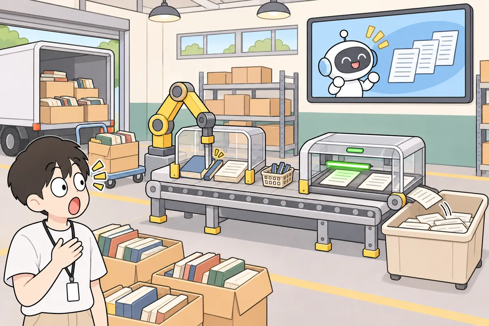
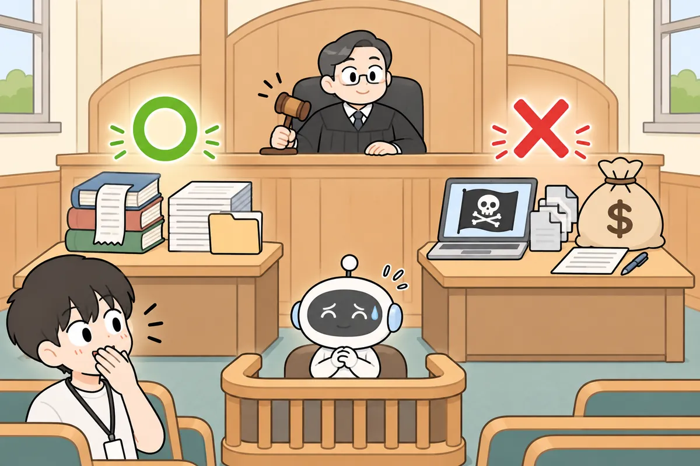
나민애 교수님은 특강에서 생성형 AI를 만들 때 가장 중요한 것이 로 데이터, 곧 텍스트라고 했습니다. 실제로 Meta는 Llama 3를 공개된 글 15조 토큰 이상으로 학습시켰다고 밝혔습니다. 그리고 2024년 7월 Nature에는 AI 모델 붕괴 연구가 실렸습니다. AI가 사람이 쓴 진짜 글 대신 다른 AI가 만든 글을 되풀이해 배우면, 복사본을 계속 다시 복사할 때 화질이 깨지는 것처럼 결국 바보가 된다는 내용입니다. 연구진은 그래서 사람이 쓴 글의 값어치가 더 커진다고 했습니다.
2025년 6월 미국 법원 판결에서, Anthropic이 중고 종이책을 사서 제본을 뜯어 스캔하고 종이는 버렸다는 사실이 알려졌습니다. 판사는 산 책을 디지털로 바꿔 학습에 쓴 것은 공정 이용으로 봤지만, 불법으로 내려받은 책을 쌓아 둔 것은 따로 문제 삼았고 이 부분은 15억 달러 합의로 이어졌습니다. AI를 만드는 회사가 책을 이렇게까지 모은다는 것 자체가, 사람이 쓴 글이 얼마나 귀한 재료인지 보여 준다고 생각합니다.
나민애 교수님은 사람도 마찬가지라서, 한 번 많이 읽었다고 계속 나오는 게 아니라 주기적으로 계속 읽어야 한다고 했습니다. 기계도 사람이 쓴 글을 계속 읽어야 하는데, 사람은 더 그렇다고 생각합니다.
AI가 발달할수록 우리가 독서교육의 길을 걸어야 하는 이유
AI가 똑똑해질수록 독서교육이 더 필요하다고 생각하는 까닭 세 가지입니다.
AI도 사람이 쌓은 지식을 배워서 새로운 결과를 냅니다. 사람도 바탕 지식을 쌓고, 그 지식들을 서로 잇는 힘을 길러야 합니다.
영상은 장면을 다 보여 주지만, 글은 읽는 사람이 직접 그려야 합니다. 그렇게 상상하는 동안 생각이 자랍니다.
딸깍은 결과만 남기지만, 글과 씨름한 과정은 읽는 사람 머릿속에 쌓입니다.
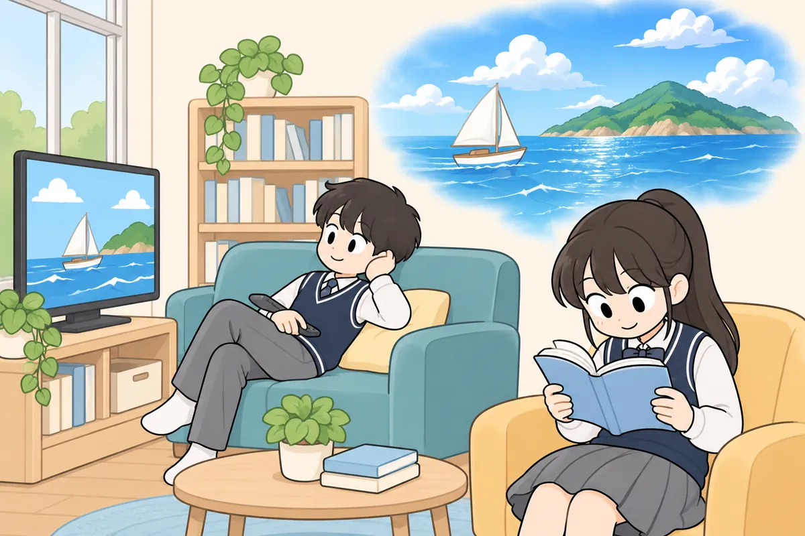
AI가 사람의 글로 배운다면, 사람이 글을 덜 읽고 덜 쓸수록 AI가 배울 글도, 그 글을 알아보는 사람도 줄어듭니다. 저는 그래서 AI가 발달할수록 독서교육의 길을 더 걸어야 한다고 생각합니다. 다음 학기 독서 수업을 시작하기 전에 학생들에게도 이 세 가지를 먼저 말해 주려고 합니다. 왜 읽어야 하는지 납득한 학생이 질문도 더 많이 던질 거라고 생각하기 때문입니다.
우리 학생들의 읽기 숫자
PISA 2025 한국 읽기 평균. 처음 참여한 뒤로 가장 낮습니다(2006년 556점).
교육부, 2026년 9월 발표읽기 기초 미달 학생 비율(2006년 → 2025년)
교육부 PISA 2025 보도자료그래도 읽기는 여전히 OECD 상위권입니다.
교육부 PISA 2025 보도자료1년 동안 책을 한 권이라도 읽은 성인 비율
문화체육관광부, 2025 국민 독서실태 조사PISA 2025 한국 읽기 점수는 501점으로, 2000년 첫 참여 이후 가장 낮았습니다. 읽기 기초 미달 학생은 2006년 5.8%에서 2025년 17.8%로 세 배가 되었습니다. 그래도 OECD 안에서는 여전히 상위권이라, 저는 추락이라기보다 아래쪽이 두꺼워졌다고 봅니다.
독서할 때 학생은 AI를 어떻게 써야 할까요?
요즘 학생들이 독후감을 쓰는 모습부터 보고, 연구에서 본 좋은 점과 AI가 나 대신 독서를 하면 생기는 일, 독서할 때 AI 사용 강령을 말씀드리겠습니다!
멋진 독후감을 과제로 받으면, 학생에게는 무엇이 남을까요?
요즘 학생들이 독후감을 쓰는 방법을 담은 영상입니다.
학생들은 이미 AI와 함께 읽고 있습니다
서울 중고생 26,531명이 생성형 AI를 가장 많이 쓴 과목
서울시교육청교육연구정보원, 2025년 7월 조사고2 진로 독서 발표에서 책을 끝까지 읽은 학생. 줄거리는 AI에게 맡겼다고 했습니다.
EBS 「다시, 읽기로」 2부AI 답이 틀릴 수 있어 확인한다는 학생(42.8%). 넷 중 한 명(25.1%)은 숙제에 AI 답을 그대로 베낀다고 답했습니다.
National Literacy Trust, 2025, 영국 13~18세 6만여 명 조사 ↗EBS 다큐 「다시, 읽기로」 2부에는 고2 교실이 나옵니다. 진로 독서 발표를 했는데 책을 끝까지 읽은 학생이 한 명도 없었고, 반쯤 읽다가 줄거리는 AI에게 맡겼다는 학생이 나옵니다. 한 학생은 혼자 한 과제는 나중에 기억이 나는데 AI에게 맡긴 것은 거의 기억나지 않는다고 말했습니다. 제가 겪은 것과 같았습니다.
궁금한 게 있으면 AI는 정말 좋은 도구입니다
주변 사람과의 대화나 검색으로는 한계가 있는 것을, AI와는 끝까지 이어서 물을 수 있습니다.
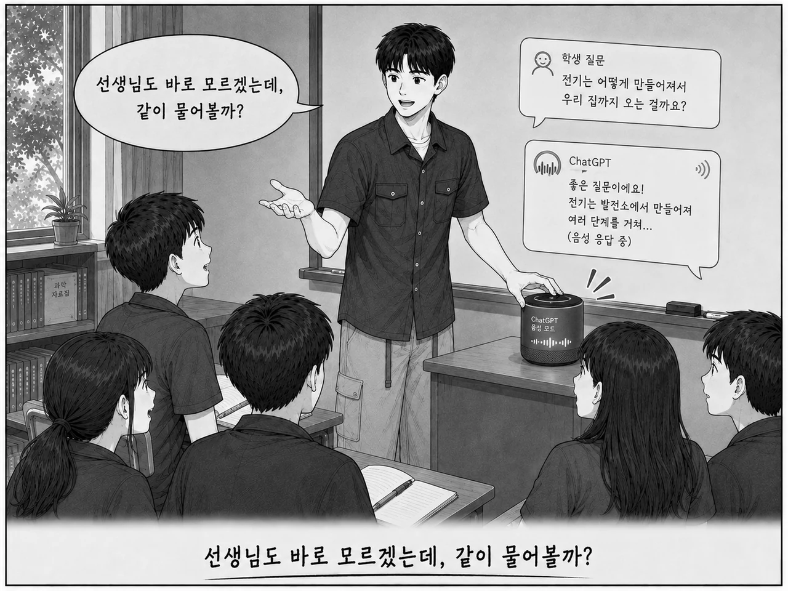
저는 AI를 못 쓰게 하자는 쪽이 아닙니다. 주변 사람과 끝까지 파고드는 대화나 검색엔진으로는 한계가 있는 것을, AI는 이미 배운 것을 바탕으로 대화해 주니까 정보를 모으는 시간이 크게 줄었습니다. 제가 어휘력이 좋은 편이 아니라서 뭉뚱그려 설명해도 "네가 말하려던 게 이거 맞아?" 하면서 대화를 이어 갈 수 있습니다. 흥미가 있고, 배우고 싶고, 궁금한 게 있다면 AI는 정말 좋은 도구입니다.
그런데 솔직히 말씀드리면, 깊은 생각이 필요한 주제는 성능 좋은 AI에게 맡기게 되니까 스스로 생각해야 하는 일이 귀찮고 피곤하게 느껴질 때가 있습니다.
AI가 질문을 던지는 쪽일 때는 도움이 됐습니다
글을 읽기 전에 AI가 만든 질문에 먼저 답을 짐작해 보게 했더니, 그냥 읽은 사람보다 이해 점수가 크게 올랐습니다. 사람이 만든 질문과 효과가 같았습니다.
Pan 외, 2025, 영어권 성인 실험 ↗독해를 어려워하던 사람은 질문을 주고받는 챗봇과 읽었을 때 점수가 가장 많이 올랐습니다(66.2% → 71.7%).
Etkin 외, Frontiers in Education, 2025, 미국 18~22세 195명 ↗두 연구 모두 AI가 읽는 사람에게 질문을 던졌다는 점이 같습니다. 선생님들이 가르치시는 질문하며 읽기를 AI가 거든 셈입니다. 다만 성인을 대상으로 한 짧은 실험이라, 중학생에게 그대로 옮기기는 조심스럽습니다.
AI가 나 대신 독서를 하면 생기는 일(인지의 외주화)
생각하는 일을 AI에게 맡기는 것을 인지의 외주화라고 부릅니다. 독서에서는 AI가 나 대신 읽고 정리하는 것입니다.
스스로 고민하고 모르는 상태를 견디며 개념을 내 것으로 만드는 과정이 사라집니다.
DBR, 「AI 시대 '인지적 외주화' 위험 넘어서려면」 ↗당장은 편하지만, 길게 보면 스스로 문제를 푸는 힘과 숙련도가 줄어듭니다.
논리학당 영상 ↗ · 박남기, 최고의 교수법 영상 ↗ · DBR ↗AI가 내놓은 매끄럽고 자신 있는 답을 따져 보지 않고 받아들여, 내가 완벽히 이해했다고 착각합니다.
아래 Kreijkes 외(2026), Aslanov 외(2026) 연구AI에게 요약을 맡기면 글과 씨름하는 시간이 줄어 당장은 편합니다. 그런데 그 씨름이 개념을 내 것으로 만드는 과정이라, 건너뛰면 스스로 읽는 힘이 줄고 AI의 매끄러운 답을 읽고 다 안 것 같은 착각에 빠집니다. 제가 「요약해줘」로 공부하다 학생 질문에 막힌 것도 이 착각 때문이었습니다. 아래 연구들이 이 세 가지를 숫자로 보여 줍니다.
AI에게 답을 구하고 요약을 맡겼을 때, 생각은 줄고 안다는 착각은 커졌습니다
역사 지문을 AI 챗봇으로만 공부했을 때보다 손으로 노트했을 때 더 많이 이해하고 기억했습니다. 그런데 학생들은 AI가 더 도움이 됐다고 느꼈습니다.
Kreijkes 외, Computers & Education, 2026, 잉글랜드 14~15세 405명 ↗같은 글을 ChatGPT 답으로 받은 학생은 그냥 읽은 학생보다 설명을 잘할 거라고 더 자신했지만, 실제로 쓴 설명은 더 짧고 질도 낮았습니다.
Aslanov 외, 인지과학회 학술대회, 2026, 칠레 대학생 102명 ↗영국 실험에서는 AI와 노트를 함께 쓴 학생 넷 중 한 명이 AI 답을 노트에 거의 그대로 옮겼습니다. 칠레 실험은 앞에서 말씀드린 설명 깊이의 착각이 AI 답을 읽을 때 더 커진다는 결과입니다. ChatGPT로 에세이를 쓴 대학생 18명 가운데 15명이 방금 쓴 자기 글을 제대로 옮기지 못했다는 MIT 연구(동료 심사 전)와, AI 요약으로 배운 사람이 웹에서 직접 찾아 읽은 사람보다 얕게 알았다는 실험(7개 실험, 10,462명)도 같은 쪽을 가리킵니다.
그런데 같은 Etkin 연구에서 독해를 어려워하던 사람은 질문형 챗봇으로 이득을 봤습니다. 그래서 저는 AI를 쓰느냐 마느냐보다, AI가 질문을 주느냐 답을 주느냐가 더 큰 차이라고 봅니다.
차이는 AI에게서 답을 받느냐, 생각할 재료를 받느냐였습니다
AI가 질문을 던지고 힌트를 주면, 생각하는 사람은 여전히 나입니다. 뭉뚱그린 내 말에 AI가 낱말을 붙여 줍니다.
읽고 끄덕이는 일만 남고, 다음에 스스로 생각하는 일이 더 무겁게 느껴집니다.
그냥 ChatGPT를 쓴 고등학생은 연습 성적이 올랐지만, AI를 빼고 본 시험에서는 안 쓴 학생보다 낮았습니다. 힌트만 주게 만든 AI를 쓴 학생은 그 손해가 대부분 사라졌습니다.
Bastani 외, PNAS, 2025, 튀르키예 고등학생 약 1,000명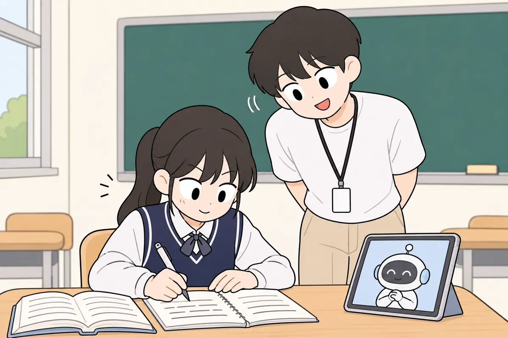
같은 도구인데 한쪽에서는 좋고 한쪽에서는 생각이 귀찮아진 까닭을 따져 보니, AI에게서 무엇을 받느냐가 달랐습니다. AI가 질문을 던지거나 힌트를 주면 생각할 재료가 생기고, 생각하는 사람은 여전히 저입니다. AI가 답을 주면 읽고 끄덕이는 일만 남았습니다. 결국 AI를 쓰느냐 마느냐보다, AI를 올바르게 쓰는 것이 중요하다고 생각합니다.
튀르키예 고등학생 약 1,000명이 참여한 수학 실험에서, 일반 ChatGPT를 쓴 학생은 연습 때 성적이 48% 올랐지만 AI를 빼고 본 시험에서는 AI를 쓰지 않은 학생보다 17% 낮았습니다. 정답 대신 힌트를 주도록 만든 AI를 쓴 학생은 그 손해가 대부분 사라졌습니다. 같은 AI라도 어떻게 쓰게 하느냐에 따라 결과가 달라진 것입니다.
독서할 때 AI 사용 강령 세 가지
AI에게서 답 대신 생각할 재료를 받는 방법을 세 가지로 줄였습니다.
답을 묻기 전에, 이 글을 읽으며 내가 생각해 볼 질문을 먼저 던져 달라고 합니다.
앞의 Pan 외(2025), Etkin 외(2025)막혔을 때 정답을 달라고 하지 않고, 스스로 답에 닿을 수 있게 힌트를 한 단계씩 달라고 합니다. 교육학에서 말하는 비계를 AI에게 부탁하는 셈입니다.
앞의 Bastani 외(2025), 힌트만 주게 만든 AI읽은 내용을 내 말로 먼저 설명하고, 빠졌거나 틀린 곳을 짚어 달라고 합니다. 짚어 준 곳은 글로 돌아가 확인합니다.
설명 깊이의 착각, Rozenblit & Keil(2002)앞에서 본 연구들을 제 말로 줄이면 이 세 가지입니다.
AI를 어디까지 허용할지는 수업마다 다르겠지만, 어떤 방식으로 쓰게 할지는 선생님이 도구를 만들 때 정해 둘 수 있습니다. 그 이야기를 다음 챕터에서 이어가겠습니다!
선생님 교실에 맞는 독서 도구 만들기
제가 만든 읽기 노트와 작은 도구들을 열어 보고, 프롬프트 템플릿을 채워 Gemini에서 간단한 독서 도구를 직접 만들어 보겠습니다!
읽기 노트에서 학생이 하는 일
학생이 먼저 쓰고, AI는 그다음에 열리게 만든 도구입니다.
이 책에서 알고 싶은 것을 질문 하나로 적습니다.
내 말로 한두 줄 요약하고, 읽으며 생긴 질문을 적습니다. 앞에서 쓴 요약이 다음 부분 위에 이어서 보입니다.
처음 질문에 내 말로 답하고, 이 책을 한 문장으로 적습니다.
요약을 20자 이상 써야 열리고, 답이 아니라 내 요약에서 빠진 곳을 질문으로 짚어 달라는 프롬프트가 나옵니다.
읽기 노트는 학생이 먼저 쓰게 만든 도구입니다. 선생님 화면에서는 같은 부분을 반 학생들이 어떻게 요약했는지 한 화면에 모아 볼 수 있고, 어느 부분에서 많이 막혔는지도 보입니다. 다음 수업에서 무엇을 짚을지 고를 때 쓰려고 넣은 기능입니다.
내년에 제 수업에서 쓰려고 다듬는 중이라, 오늘은 체험 화면과 예시 화면으로 보여 드립니다. 과학 책뿐 아니라 국어, 도덕, 사회 책에서도 쓸 수 있도록 과목과 읽을 부분을 선생님이 정하게 만들었습니다.
같은 생각으로 만든 독서 도구 열 가지
책 고르기부터 질문 사다리, 문단 지도, 개념 렌즈 노트까지 작은 도구 열 개를 실험실에 모아두었습니다. 이름을 누르면 바로 열립니다.

열 개 모두 학생이 먼저 생각해서 쓰게 만들었고, 서버 없이 그 기기에만 저장됩니다. AI가 나오는 도구는 학생이 다 쓴 뒤에만 프롬프트가 열리고, 그 프롬프트도 AI에게서 질문을 받도록 적었습니다.
개념탐독을 하시는 선생님들께는 개념 렌즈 노트가, 국어 수업에는 문단 지도와 두 글 견주기가 바로 쓰실 만할 것 같아 함께 소개합니다. 도구마다 HTML 파일 하나로 만들었습니다. 다만 제 부족한 아이디어로 만든 것이라, 선생님들께서 쓰고 싶은 프로그램은 직접 AI와 대화하고 질문하며 처음부터 만들어 가시기를 추천드립니다.
AI 사용 강령을 도구에 담는 방법
⑥에서 말씀드린 강령을 학생이 지키도록, 도구를 만들 때 미리 넣어 둡니다.
학생이 빈칸만 채우면 강령에 맞는 프롬프트가 만들어지게 합니다. 학생은 처음부터 올바른 프롬프트로 AI를 씁니다.
프롬프트 맨 앞에 「너는 답을 알려 주지 않고 질문과 힌트로 이끄는 독서 도우미야」 같은 문장을 넣어 둡니다.
답이나 결과물을 얻었다고 학습이 끝난 것으로 보지 않습니다. 웹앱으로 만들기는 어려워서, 수업에서 선생님이 지켜 주셔야 하는 부분이라고 생각합니다.
너는 답을 알려 주지 않고, 질문과 힌트로 내가 스스로 생각하게 돕는 독서 도우미야. 아래 규칙을 꼭 지켜 줘. 1. 정답이나 요약을 먼저 말하지 마. 2. 내가 읽은 부분에서 생각해 볼 질문을 하나씩 던져 줘. 3. 내가 막히면 정답 대신 힌트를 한 단계씩 줘. 4. 내가 내 말로 쓴 설명에서 빠졌거나 틀린 곳을 짚어 주고, 글의 어디를 다시 읽으면 좋을지 알려 줘. [읽은 책과 부분] ○○ [내 말로 쓴 설명] ○○
읽기 노트에서 요약을 쓴 뒤에 열리는 프롬프트도 같은 생각으로 적었습니다. 아래 실습의 [지킬 것]에서 「학생용 AI 프롬프트 템플릿」을 켜 두시면, 선생님이 만드시는 도구에도 이런 템플릿이 들어갑니다.
프롬프트 템플릿을 채워서 독서 도구 하나 만들어 보기
칸을 채우시면 아래 프롬프트가 바로 바뀝니다. 비워 두신 칸에는 예시 문장이 들어갑니다.
나는 중학교 ○○ 교사야. 학생들이 책을 읽을 때 쓰는 작은 웹 도구를 HTML 파일 하나로 만들어 줘. [수업에서 불편한 점] 학생들이 책을 읽고 나서 "재밌었어요" 말고는 할 말이 없어. [도구가 할 일] 학생이 읽은 부분을 자기 말로 두 줄 요약하고, 읽으며 생긴 질문을 하나 적게 해 줘. [지킬 것] - 학생이 먼저 쓰게 하고, AI가 답을 대신 써 주는 기능은 넣지 마. - 서버 없이 그 기기에만 저장되게 해 줘. - 휴대폰에서도 글씨가 잘 보이게 해 줘. - 이름이나 학번은 받지 마.
저는 이 프롬프트에서 [수업에서 불편한 점]과 [도구가 할 일]만 바꿔 가며 씁니다. 처음 나온 파일이 마음에 들지 않으면 "글씨를 더 크게", "질문을 세 개까지 적게"처럼 하나씩 고쳐 달라고 다시 말합니다. [지킬 것]은 제가 도구를 만들 때마다 넣는 조건입니다.
적어 주신 내용은 이 기기에만 남고 어디로도 보내지지 않습니다.
Gemini에서 바로 만들어 보기
오늘은 가볍게 해 보는 실습이라 Gemini를 추천드립니다. 다른 AI에도 같은 프롬프트를 그대로 붙여넣으시면 됩니다.
오늘 추천. 구글 계정으로 들어가 캔버스에서 만든 도구를 바로 써 봅니다.
Claude 열기 ↗답에 나온 파일 카드를 누르면 오른쪽 창에서 만든 도구가 열립니다.
ChatGPT 열기 ↗코드 상자나 내려받는 파일 카드로 나옵니다.
- 입력칸 왼쪽 ＋를 누릅니다
Gemini 새 채팅 화면의 입력칸 왼쪽에 있습니다.
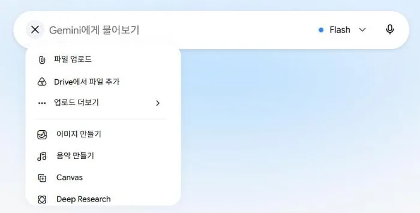
- Canvas를 누릅니다
입력칸 아래에 Canvas가 켜졌는지 확인합니다.

- 가장 높은 수준의 모델을 고릅니다
입력칸 오른쪽의 모델 이름(위 그림의 Flash)을 눌러, 목록에서 가장 높은 수준의 모델을 고릅니다.
- 프롬프트를 붙여넣고 보냅니다
위에서 복사한 프롬프트를 붙여넣고 오른쪽 ↑ 단추를 누릅니다.
- [미리보기]로 써 봅니다
오른쪽 캔버스에서 만든 도구를 바로 써 보고, 고칠 곳은 한 가지씩 다시 말합니다. [다운로드]를 누르면 HTML 파일로 받습니다.
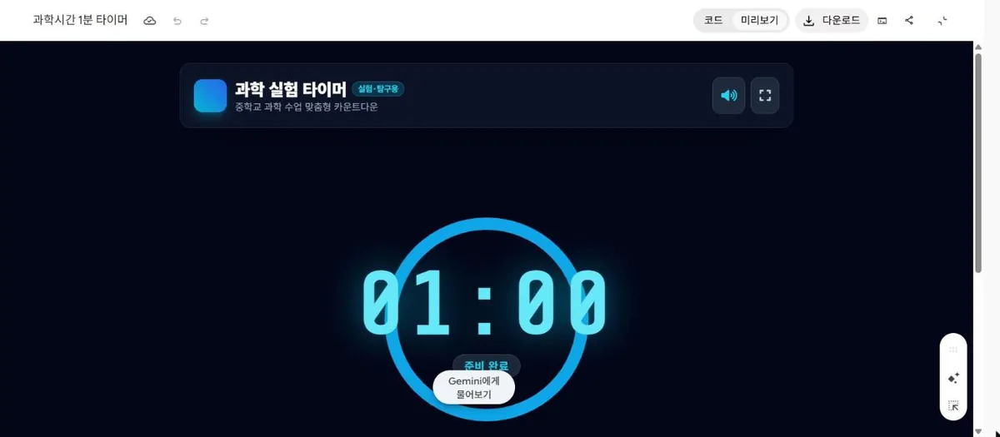
만든 파일을 학생들에게 주소로 나누는 방법과 Claude, ChatGPT에서 하는 순서는 바이브코딩 기초 페이지에 정리해두었습니다.
제 바이브코딩 연수 자료
만드는 법부터 디자인, 스킬까지 연수에서 쓰던 자료를 그대로 두었습니다.
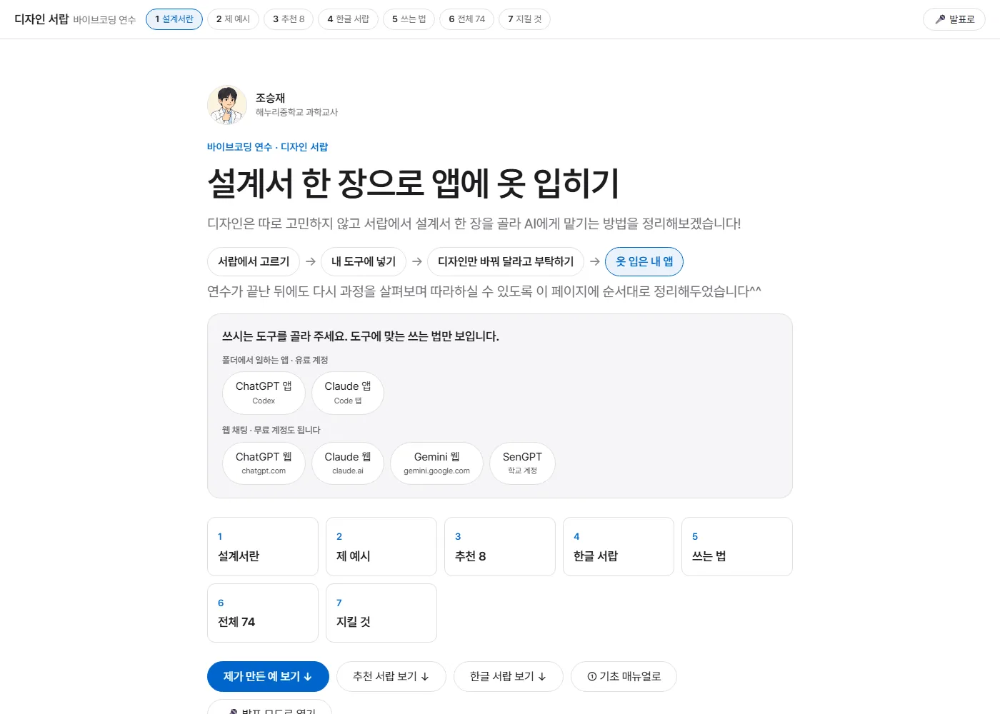
제 바이브코딩 연수의 시작 페이지입니다. 기초부터 학생 데이터 연결까지 모듈별로 나뉘어 있습니다.
디자인 서랍 · DESIGN.md ↗잘 알려진 서비스의 디자인을 정리한 DESIGN.md 74벌과 한글 서랍입니다. 고른 파일을 AI에게 주면 그 느낌으로 페이지를 바꿔 줍니다.
학습지형 · 기본형 · 시뮬 링크형 · 3D형 · 틀 · 규격서
AI에게 스킬이나 규격서를 함께 주고 차시 내용만 알려 주시면 같은 틀의 수업 페이지가 나옵니다.
읽기 노트처럼 학생 글을 모아 보는 도구를 만들 때 보시면 됩니다.
우리 교실에 이런 독서 도구가 있으면 좋겠다
꿀팁: 예쁜 페이지는 거꾸로 묻기(리버스 프롬프팅)로
학생이 열어 보고 싶게 만들려면 페이지가 예쁘기도 해야 합니다. 마음에 드는 디자인을 보여 주고, 그 디자인 규칙을 AI가 거꾸로 적게 합니다.
일상에서 마음에 드는 포스터, 메뉴판, 책 표지를 사진으로 찍거나, 디자인 서랍 같은 공개 디자인을 고릅니다.
사진이나 주소를 주고, 이 디자인을 다시 만들 수 있게 규칙을 DESIGN.md로 적어 달라고 합니다.
만들어 둔 HTML과 DESIGN.md를 함께 주고, 기능과 글은 그대로 두고 디자인만 바꿔 달라고 합니다.
화면을 캡처해서 보여 주고, 마음에 안 드는 곳을 한 번에 하나씩 말합니다.
첨부한 사진(또는 주소)의 디자인을 다른 페이지에도 같은 느낌으로 쓸 수 있게 DESIGN.md 파일로 정리해 줘. 내용은 빼고 디자인 규칙만 적어 줘. - 색: HEX 코드와 어디에 쓰는지(바탕, 글자, 강조, 선) - 글꼴과 글자 크기(제목, 본문, 작은 글자) - 여백, 모서리 둥글기, 선과 그림자 - 버튼, 카드, 표 모양과 배치 학생이 읽기 쉽게 글자와 바탕의 대비는 4.5:1 이상으로 맞춰 줘. 로고, 상표, 사진 속 글은 넣지 마.
첨부한 DESIGN.md 규칙대로 이 HTML 파일의 디자인만 바꿔 줘. 기능과 글 내용은 그대로 두고, 바꾼 곳을 짧게 알려 줘. (고칠 때) 캡처한 화면에서 [제목 글자가 작아.] 이것 하나만 고쳐 줘. 나머지는 건드리지 마.
맨 앞에서 보여 드린 테트리스 영상도 사진 한 장을 함께 주고 「디자인은 사진을 참고해서」라고 부탁한 것입니다. 결과물을 먼저 보여 주고, 그 결과물을 만들 지시문을 AI가 거꾸로 써 내게 하는 방법을 리버스 프롬프팅이라고 부릅니다. 디자인을 말로 설명하기 어려울 때 특히 쓸모가 있습니다. 한 번 받은 DESIGN.md는 다음 도구를 만들 때도 그대로 다시 쓸 수 있습니다.
다만 사진 속 디자인을 통째로 베끼기보다 색, 글꼴, 여백 같은 규칙만 가져오시는 편이 좋습니다. 로고나 상표는 쓰지 않고, 공개 디자인은 출처와 사용 조건을 함께 확인합니다. 고칠 때는 한 번에 여러 가지를 말하면 잘 고쳐진 곳까지 바뀌는 일이 많아서, 저는 캡처 한 장에 고칠 곳 하나씩 말합니다.
제가 그려 보는 다음 책
마지막으로 제 공상 하나를 말씀드리겠습니다!
전자책 다음의 책
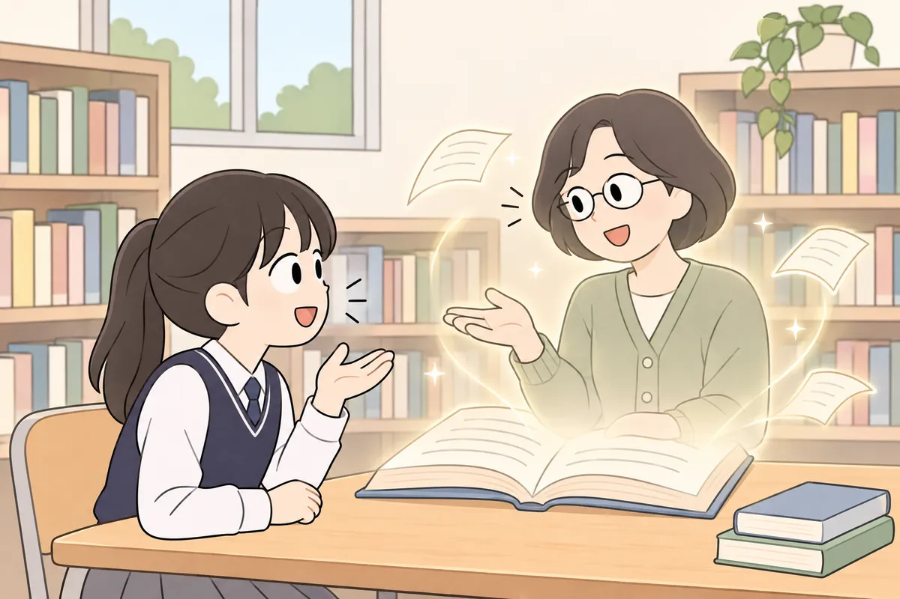
지금 책의 다음 모습은 전자책입니다. 저는 그 전자책이 AR 같은 기술로 오감을 채우고, 간접경험을 넘어 직접경험을 하게 하는 쪽으로 갈 거라고 생각합니다.
그리고 책 안에 저자의 페르소나와 지식이 들어가서, 독자가 저자에게 질문하고 소통하며 책을 읽는 때가 올 거라고 봅니다.
마무리
연수가 끝난 이후, 살펴보시면 도움되실 자료
오늘은 제 질문하는 교실과 직접 만든 도구들, AI로 공부하다 실패한 이야기, 그리고 학생이 먼저 생각하게 만든 독서 도구 이야기를 드렸습니다. 오늘 떠올리신 독서 도구가 선생님만의 도구로 이어지면 좋겠습니다. 연수 뒤에도 다시 열어 보실 수 있게 이 페이지와 링크를 그대로 두겠습니다. 이제 선생님들의 사례 나눔으로 넘기겠습니다^^
사례 나눔 전에, 오늘 이야기에 덧붙이거나 묻고 싶은 것이 있으신가요?
출처
- EBS 특별기획 「다시, 읽기로」 2부 AI 시대, 읽기의 반격(2025-12-27 방송). 유튜브
- 나민애, EBS 「나의 두 번째 교과서」 국어 1강 「읽기, 큰 세상을 만나는 기쁨」(2024). 유튜브
- 서울특별시교육청, 「AI 시대, '책 읽는 학교, 책 읽는 서울' 독서교육 비전 선포」 보도자료(2025-12-17)
- 서울시교육청교육연구정보원, 『서울교육』 264호, 생성형 AI의 교육적 활용 조사(2025년 7월 조사, 중고생 26,531명)
- Rozenblit & Keil, The misunderstood limits of folk science: an illusion of explanatory depth, Cognitive Science 26(5)(2002)
- 교육부 고시 제2022-33호 [별책 5] 국어과 교육과정, [9국02-02] 적용 시 고려 사항
- Rosenshine, Meister & Chapman, Teaching Students to Generate Questions: A Review of the Intervention Studies, Review of Educational Research 66(2)(1996)
- Meta, Introducing Meta Llama 3(2024-04-18) · Shumailov 외, AI models collapse when trained on recursively generated data, Nature 631(2024)
- EBSi 교육다큐 「책맹인류」, 「용수철? 아빠 친구 이름 같아요」 혼자서는 교과서도 읽을 수 없다. 유튜브
- 교육부, OECD PISA 2025 결과 발표 보도자료(2026-09-08) · 문화체육관광부, 2025년 국민 독서실태 조사(2026-03-06)
- Kosmyna 외, Your Brain on ChatGPT: Accumulation of Cognitive Debt when Using an AI Assistant for Essay Writing Task, arXiv 2506.08872(2025, 동료 심사 전)
- 동아비즈니스리뷰(DBR), 「AI 시대 '인지적 외주화' 위험 넘어서려면」. 기사
- 논리학당, 「생성형 AI시대, AI를 어떻게 활용할 것인가?: 인지적 외주화의 위험과 교육적 해법」 · 박남기, 「AI 시대 학습외주화 방지용 교수법」(최고의 교수법). 유튜브 1 · 유튜브 2
- Melumad & Yun, Experimental evidence of the effects of large language models versus web search on depth of learning, PNAS Nexus 4(10)(2025)
- Bastani 외, Generative AI without guardrails can harm learning: Evidence from high school mathematics, PNAS 122(26)(2025)
- EBS 「생각의 멸종」 인스타그램 릴스 5편(@ebs_yourliteracy)
- National Literacy Trust, Young people and teachers' use of generative AI to support literacy in 2025(2025-08)
- Pan, Schweppe, Teo, Indrajaya & Wenzel, Using ChatGPT-generated prequestions to improve memory and text comprehension, Journal of Applied Research in Memory and Cognition(2025)
- Etkin, Etkin, Carter & Rolle, Differential effects of GPT-based tools on comprehension of standardized passages, Frontiers in Education 10(2025)
- Kreijkes 외, Effects of LLM use and note-taking on reading comprehension and memory: A randomised experiment in secondary schools, Computers & Education 243(2026)
- Kim 외, FABLES: Evaluating faithfulness and content selection in book-length summarization, COLM 2024
- Aslanov, Felmer & Guerra, Overconfidence without understanding? Evidence for an illusion of understanding in AI-assisted explanations, Proceedings of the Cognitive Science Society 48(2026)
시간 관계상 생략한 내용
④에서 줄여 말씀드린 이야기를 자세히 적어 두었습니다. 공문 읽기와 교과서 읽기, 바꾼 공부 순서, 그 순서를 도구로 옮긴 표까지 담았습니다.
도구를 만들 때도, 긴 공문을 읽을 때도 AI를 씁니다
질문과수원 같은 제 수업 도구도 AI와 함께 만들었고, 긴 공문은 NotebookLM에 넣어 제 할 일부터 정리합니다.
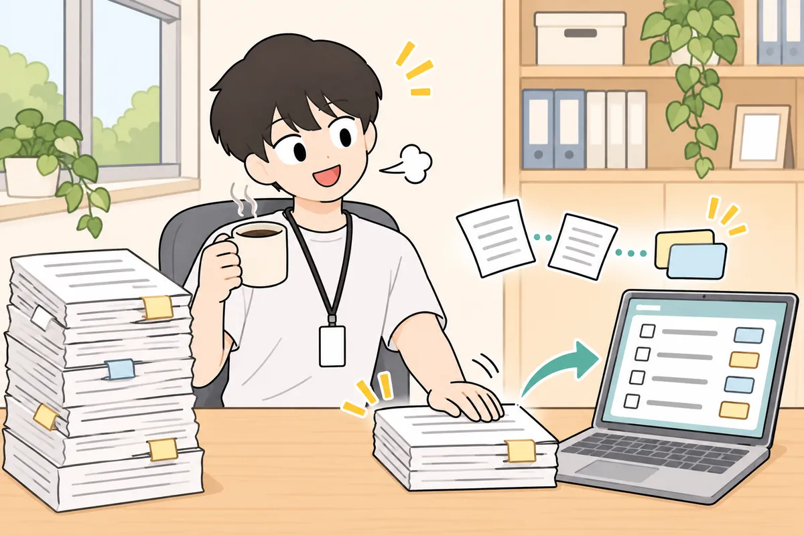
아주 긴 공문이나 디벗 양품화처럼 복잡한 업무가 오면 AI나 NotebookLM에 넣습니다. 그러면 제가 할 일 위주로 정리해 주고, 제 업무 현황을 말하면 다음에 무엇을 하면 되는지 알려 주고, 출처가 궁금하면 몇 쪽에 어떻게 나와 있는지 짚어 줍니다.
출처를 바로 열어 확인할 수 있어서 잘못된 내용이 섞일까 하는 걱정도 훨씬 줄었습니다. 그리고 그 업무는 제가 잘 알고 있어서, 정리된 내용이 이상하면 바로 알아챌 수 있습니다.
공부할 때 제가 가장 많이 한 말, 「요약해줘」
과학덕후 학생들의 5분 질문에 답하려고, 전공이 아닌 우주를 5시간씩 공부했습니다.
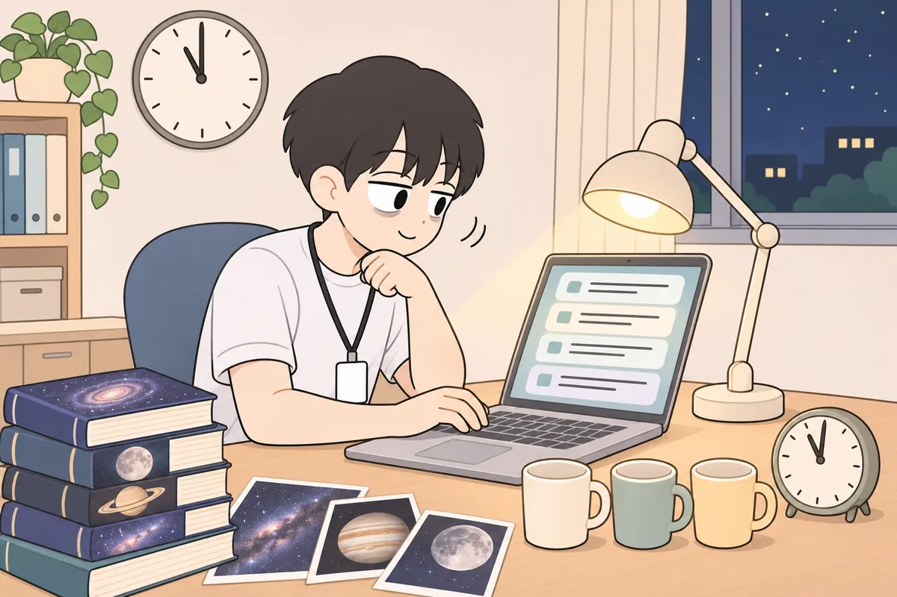
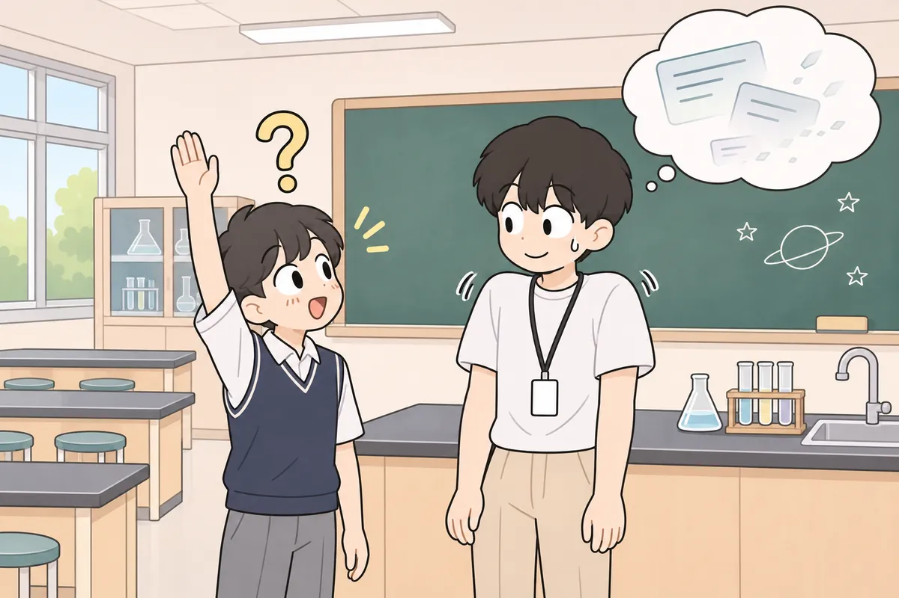
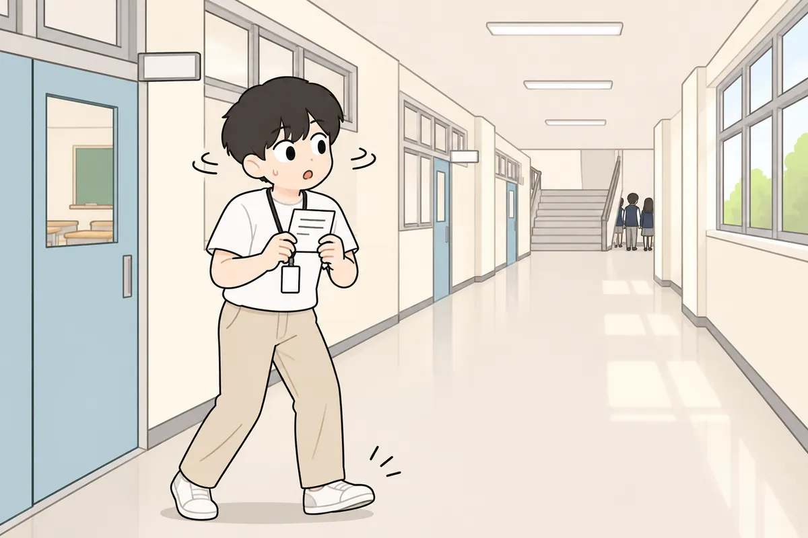
그런데 공부는 달랐습니다. 과학덕후 학생들은 수업을 마치자마자 5분 동안 질문을 쏟아냅니다. 제 전공이 아닌 우주 질문이라 그 5분을 위해 5시간을 공부했고, 그때 AI에게 가장 많이 한 말이 「요약해줘」였습니다. 답이 바로 나오고 깔끔해서 읽고 나면 다 안 것 같았습니다.
그러다 한 학생의 질문에 막혀서 "선생님이 조금 더 알아보고 다음 시간에 알려 줄게" 하고 쉬는 시간에 쫓아갔는데, 아이는 없었습니다. 제 권위도 같이 없어졌습니다. 돌아보니 제가 쌓은 지식에는 알맹이가 없었습니다. 요약을 읽고 안다고 착각한 것인데, 심리학에서는 이것을 설명 깊이의 착각이라고 부릅니다. 사람은 '왜'와 '어떻게'를 실제보다 훨씬 잘 안다고 믿다가, 직접 설명해 보려 하면 그 믿음이 무너집니다.
공문은 처리하려고 읽고, 공부는 달라지려고 읽습니다
읽고 나서 할 일을 처리하는 것이 목적이라 빨리 끝낼수록 좋습니다. 그 업무를 이미 알아서 틀린 곳이 보입니다.
읽고 나서 내 머릿속이 바뀌는 것이 목적이라 읽는 과정이 핵심입니다. 처음 배우는 내용이라 요약을 걸어 둘 곳이 없습니다.
업무에서는 그렇게 좋던 AI가 공부에서는 왜 안 됐는지 따져 보니, 읽는 목적이 달랐습니다. 이것은 선생님들께서 늘 가르치시는 내용이었습니다. 읽기 목적에 따라 읽는 방법도 달라집니다. 중학교 국어과 교육과정의 요약 성취기준([9국02-02])에도 요약 규칙을 기계적으로 적용하기보다 읽기 목적을 먼저 정하게 하라는 내용이 있습니다.
나민애 교수님도 특강에서 대중서는 참고서처럼 필요한 것만 가져오고, 어려운 책은 핵심 낱말을 다른 사람에게 설명할 수 있을 때까지 읽으라고 했습니다. 저는 공문을 앞의 방법으로, 교과서를 뒤의 방법으로 읽어야 했던 것입니다.
공문을 읽을 때와 책을 읽을 때, 선생님은 읽는 방법이 어떻게 다르신가요?
지금 제가 공부하는 순서
지금은 읽으면서 질문을 적고, 읽은 것을 제 말로 다시 씁니다. 어디서 막혔고 어떻게 풀었는지도 노션에 지저분하게 텍스트로 적어 둡니다. AI에게는 그 지저분한 텍스트를 보기 좋게 정리하는 일만 맡깁니다.
알고 보니 선생님들이 가르치시는 방법이었습니다
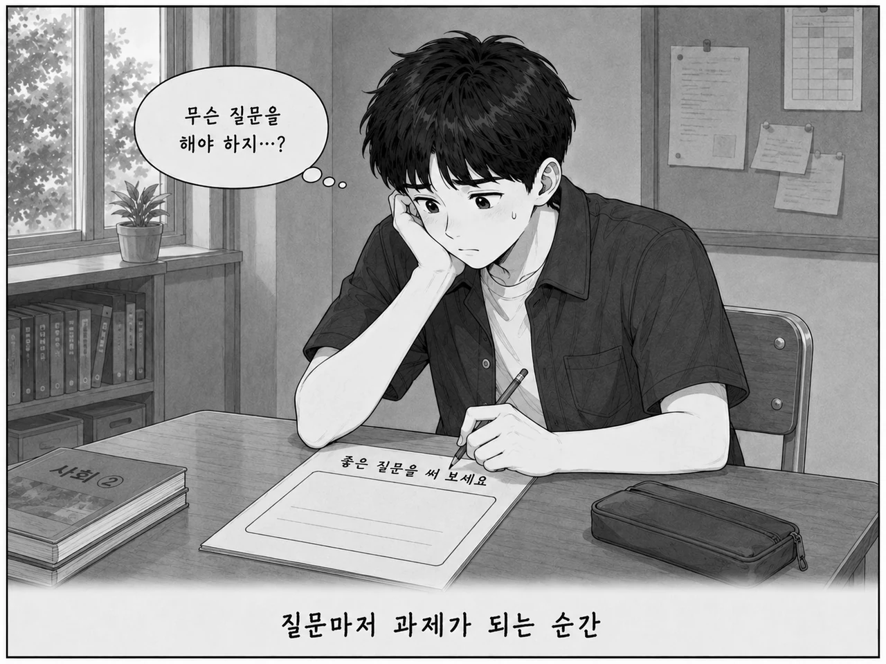
질문을 만들며 읽은 사람이 시간은 더 걸렸지만 훨씬 많이 기억했습니다. 실험에 참여한 사람들은 "무슨 질문을 해야 하지?"에서 막혔습니다.
EBS 「다시, 읽기로」 2부한 장이 끝날 때마다 스스로 요약하고, 그 요약을 들고 다음 장으로 넘어갑니다.
나민애, EBS 「나의 두 번째 교과서」 국어 1강처음 보는 글의 이해력이 올랐습니다. 효과크기 중앙값 0.36(표준화 검사), 0.86(연구자 제작 검사)
Rosenshine 외, 1996이렇게 바꾸고 나서 EBS 다큐를 봤는데, 질문을 만들며 읽은 사람이 시간은 더 걸렸지만 훨씬 많이 기억했다는 실험이 나왔습니다. 실험에 참여한 사람들이 무슨 질문을 해야 할지 몰라 막힌 모습까지 제 학생들과 똑같았습니다. 나민애 교수님은 챕터가 끝날 때마다 스스로 요약하라고 했는데, 제 「요약해줘」와 같은 요약이지만 누가 하느냐가 달랐습니다. 제가 5시간씩 헤매다 찾은 방법이 선생님들께서 교실에서 이미 가르치고 계신 방법이었습니다.
같은 순서를 세 번 씁니다
제 공부 순서를 학생에게 권하는 순서로, 다시 읽기 노트의 기능으로 옮겼습니다.
| 제 공부 순서 | 학생에게 권하는 방법 | 읽기 노트에 넣은 기능 (⑦) |
|---|---|---|
| 질문하며 읽기 | 먼저 읽으며 표시하고 질문 만들기 | 읽기 전 질문 칸 |
| 내 말로 정리 | 내 말로 쓰기 | 부분마다 내 말 요약 |
| 생각한 과정까지 텍스트로 | 어디서 막혔는지 적기 | 선생님 화면의 막힌 곳 보기 |
| 정리만 AI에게 | 내 말로 쓴 설명에 AI 피드백 받기 | 요약 20자 뒤에야 열리는 되묻기 프롬프트 |
제가 5시간씩 헤매다 바꾼 순서는 결국 학생에게도 권하고 싶은 순서였고, 도구를 만들 때 지킨 조건이기도 했습니다. ⑦에서 보여 드린 읽기 노트는 이 표의 오른쪽 칸을 그대로 옮긴 것이고, 실험실 도구들은 내 말로 쓰는 칸에 붙여넣기를 막아 두었습니다. 저는 도구를 만들 때마다 「학생이 먼저 무엇을 쓰게 할지, AI는 언제 열지」를 이 순서로 정합니다.